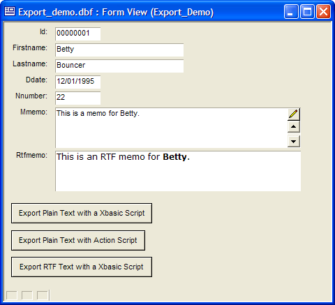
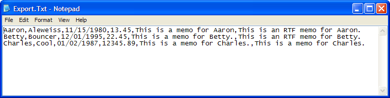
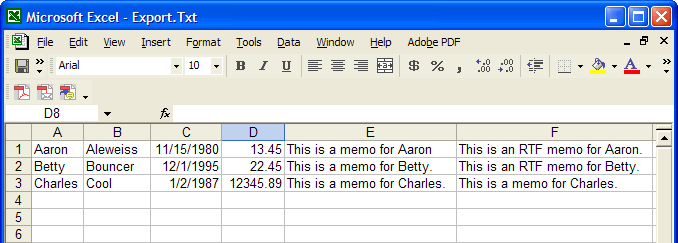
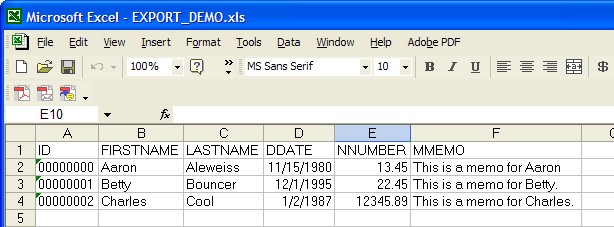
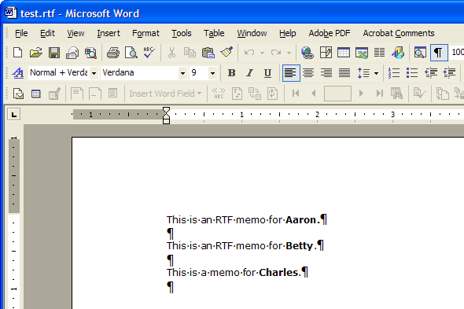

Exporting Fields from a Table
Exporting Plain Text with a Xbasic Script
It is quite easy to export character, numeric, date, Memo, and RTF Memo fields with an Xbasic script. The following form shows the fields of the table and some sample data.

Open your form and switch to design mode by clicking
 .
.Open the Toolbox (if it is not already open) by clicking
 .
.Select the button tool
 and sketch a button onto the form ("Export Plain
Text with a Xbasic Script" in the picture above).
and sketch a button onto the form ("Export Plain
Text with a Xbasic Script" in the picture above).The following screen will appear. Enter the appropriate Label text, select Use Xbasic Editor, and click Next >.
Enter a script that follows this format. Note where you want to substitute the name of your table (for export_demo ) and your actual field names (for firstname, lastname, nnumber, ddate, mmemo, and rtfmemo ).
The number conversion specifies the number of characters (8) and the number of decimal digits (2). You should substitute numbers that correspond to your field's specifications.
Save your script and your modified form.
Switch to view mode by clicking
 .
.Click your new Export Plain Text with Script button.
 Note : The RTF Memo
conversion removes all formatting and leaves you with plain text.
Note : The RTF Memo
conversion removes all formatting and leaves you with plain text.
|
dim tbl as P dim fname as C dim lname as C dim num as C dim dat as C dim memo_buffer as C dim rtf_memo_buffer as C dim fbuffer as C dim fptr as P dim fname as C fname = ui_get_file("Export File Name", "(*.txt)") if (alltrim(fname) <> "") then fptr = file.create(fname, FILE_RW_EXCLUSIVE) else end end if fbuffer = "" tbl = table.open("export_demo") tbl.fetch_first() while .not. tbl.fetch_eof() fname = alltrim(tbl.Firstname) lname = alltrim(tbl.Lastname) dat = dtoc(tbl.Ddate) num = alltrim( str(tbl.Nnumber,8,2) ) memo_buffer = tbl.Mmemo rtf_memo_buffer = rtf_field_to_text("Rtfmemo") fbuffer = fname + "," + lname + "," + dat + "," + num + "," + memo_buffer + "," + rtf_memo_buffer + crlf() fptr.write(fbuffer) tbl.fetch_next() wend tbl.close() fptr.close() |
The exported file ( c:\export.txt ) looked like this in Notepad.

After importing the data in Excel (as a comma delimited file), the data looked like this.

Exporting Plain Text with an Action Script
The export of data using Action Scripting is faster and easier, but it does not handle RTF memo fields. Memo fields are truncated to 255 characters.
Open your form and switch to design mode by clicking
.Open the Toolbox (if it is not already open) by clicking
.Select the button tool
and sketch a button onto the form ("Export Plain
Text with Action Script" in the picture above).When the Define Button screen appears, enter the appropriate Label text, select Use Action Scripting, and click Next >.
Click
 .
.Select "Form/Browse" from the Category list and "Quick Export to Excel" from the Action list.
Click Finish > Finish.
Save your script and your modified form.
Switch to view mode by clicking
.Click your new Export Plain Text with Action Script button.
The exported file looked like this in Excel.

Exporting Rich Text with a Xbasic Script
Open your form and switch to design mode by clicking
.Open the Toolbox (if it is not already open) by clicking
.Select the button tool
and sketch a button onto the form ("Export RTF
Text with a Xbasic Script" in the picture above).When the Define Button screen appears, enter the appropriate Label text, select Use Xbasic Editor, and click Next >.
Enter a script that follows this format. Note where you want to substitute the name of your table (for export_demo ) and your actual field name for rtfmemo.
Save your script and your modified form.
Switch to view mode by clicking
.Click your new Export RTF Text with Script button.
Open the resulting file with Microsoft Word.
|
dim num as C dim dat as C dim memo_buffer as C dim rtf_memo_buffer as B dim rtf_memo as C dim fbuffer as C dim fptr as P dim fname as C dim fldptr as P dim bptr as P fbuffer = "" fname = ui_get_file("Export RTF File Name", "(*.rtf)") if (alltrim(fname) <> "") then fptr = file.create(fname, FILE_RW_EXCLUSIVE) fptr.write("{") else end end if tbl = table.open("export_demo") tbl.fetch_first() while .not. tbl.fetch_eof() fldptr = tbl.field_get("rtfmemo") bptr = rtf.create("") bptr.Binary_Text = fldptr.value_get() rtf_memo = bptr.Rtf_Text rtf_memo = left(rtf_memo, len(rtf_memo) - 1) rtf_memo = right(rtf_memo, len(rtf_memo) - 1) fbuffer = rtf_memo + "{\par }{\par }" fptr.write(fbuffer) tbl.fetch_next() wend fptr.write("}") tbl.close() fptr.close() |
This is how the exported data appears in Microsoft Word.

See Also
RTF_FIELD_TO_TEXT(), STR(), DTOC(), ALLTRIM(), FILE Methods, Quick Export to Excel, Field Functions and Methods, RTF Functions and Methods, Table Functions and Methods